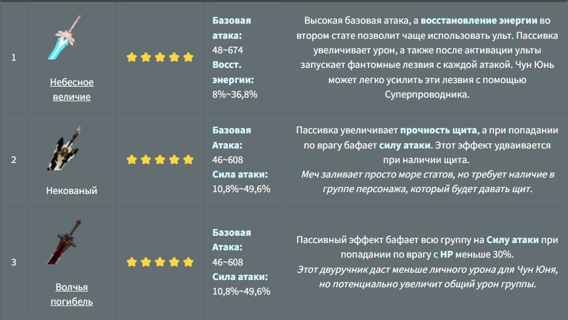
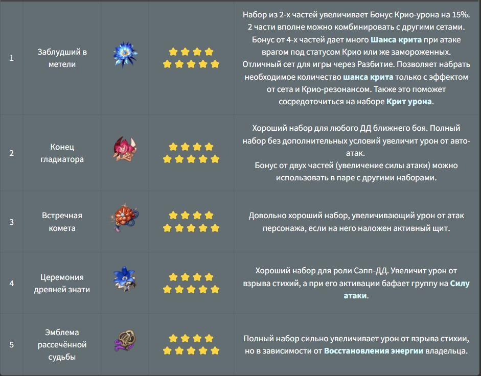

Чун Юнь в Genshin Impact – ⭐️⭐️⭐️⭐️ персонаж, который согласно лору является выходцем из семьи охотников на демонов. Он и сам считает себя начинающим экзорцистом. Более подробно с его историей можно ознакомиться при прохождении Задания легенд: Встречи с Чун Юнем.
Лучшее оружия

На ранних этапах игры, до 40-го и даже до 45-го ранга приключений, особого смысла в подборе сетов нет. Артефактов с нужным верхним статом и прокачанных всего лишь на +12 вполне достаточно для прохождения контента.
После достижения 45-го ранга на артефактах придется сосредоточить свое внимание:
